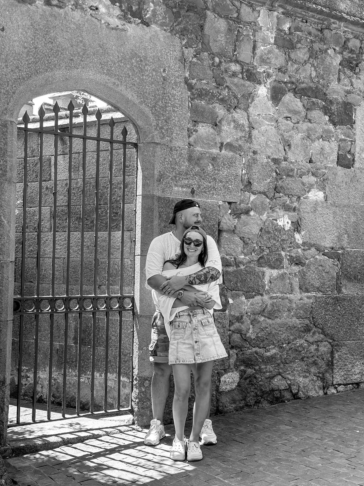
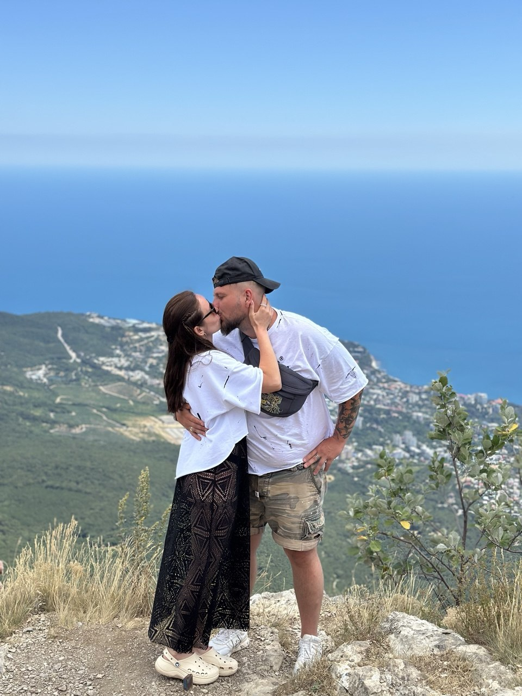
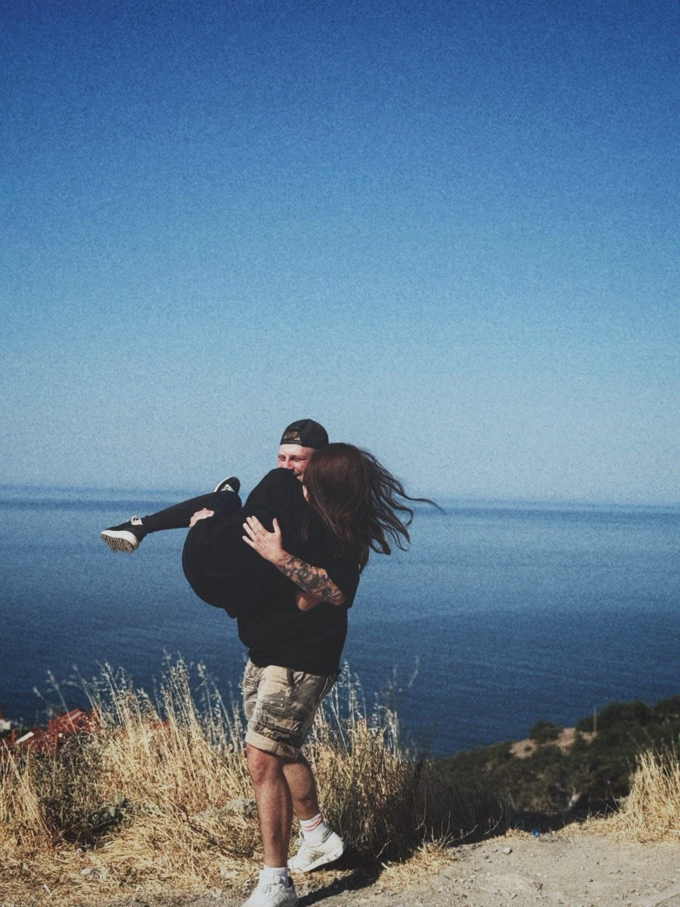
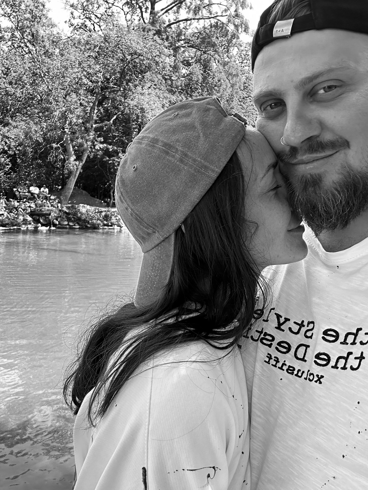
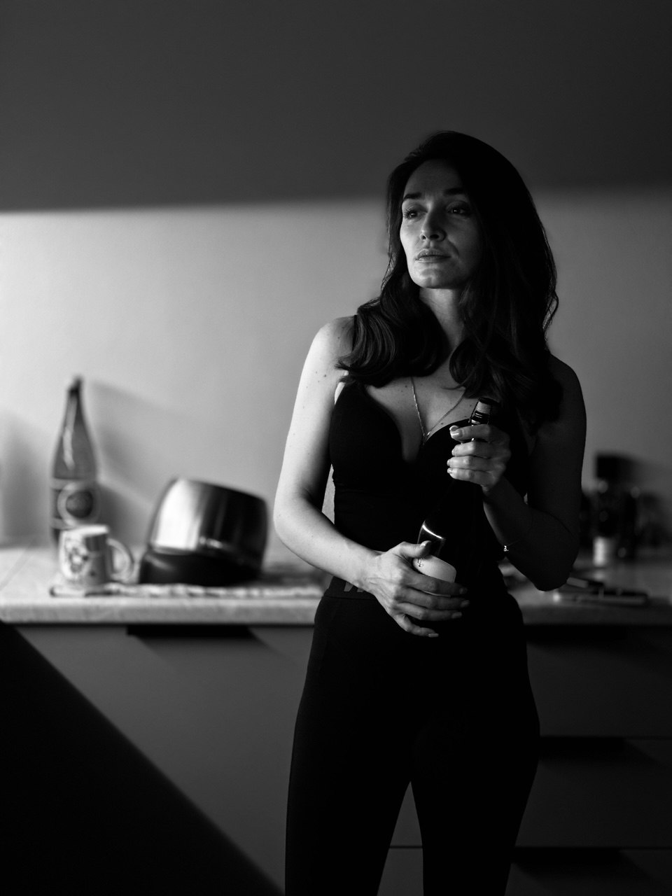
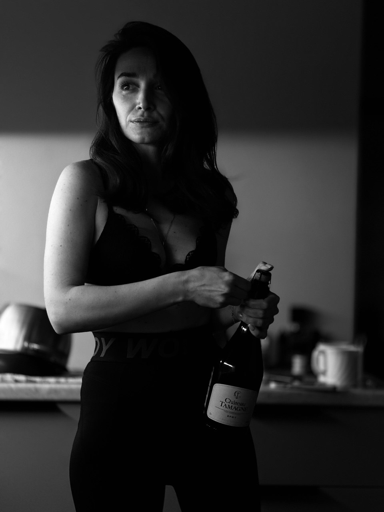

Сбор гостей
Встречаемся на Тверской площади.
Анастасия ♥ Павел
Приглашение на свадьбуДорогие родные и друзья
Совсем скоро состоится один из самых важных дней в нашей жизни. Мы будем счастливы разделить его с вами.
У близких душ единые поля,
и маяки едины, и моря.
До нашей свадьбы
Встречаемся на Тверской площади.
Самый важный момент нашего дня.
До 14:00 сохраняем этот день в фотографиях.
Празднуем, общаемся и поднимаем бокалы.


Вместе — наше любимое место

Вас ждут фермерские сыры и мясные деликатесы, фрукты и ягоды, разнообразные закуски и овощи, салаты и горячие закуски. На горячее можно будет выбрать мясо, рыбу, пасту или овощное блюдо. В баре — вино, крепкие напитки, коктейли, лимонады, чай и кофе.
Пожалуйста, заранее сообщите нам о пищевых предпочтениях, аллергиях или диетических ограничениях.
Ваше присутствие в день нашей свадьбы — самый значимый подарок для нас!
Мы понимаем, что дарить цветы на свадьбу — это традиция, но мы не сможем насладиться их красотой в полной мере. Будем рады денежному подарку, так как его проще донести до дома.
Будем благодарны, если вы воздержитесь от криков «Горько» на празднике, ведь поцелуй — это знак выражения чувств, он не может быть по заказу.
Торт продавать не будем, деньги «на мальчика или девочку» собирать тоже не планируем. Конкурсов «Карандаш» и «Шарик» не будет. И выкупать невесту мы не станем — она бесценна!



Здесь мы встречаемся перед церемонией.
Открыть картуИнформация о площадке и маршруте.
Открыть картуСтолешников переулок, 7с2. Продолжение праздника после фотосессии.
Открыть картуDress code
Выбирайте образ, в котором вам комфортно. Просим только отказаться от полностью белых, красных и сиреневых нарядов.
Сохраните дату
среда · 02.09.2026
Подтверждение
Пожалуйста, дайте знать до 30 августа 2026 года.
Обнимаем и будем вспоминать вас в этот день.
2 сентября 2026 · Москва